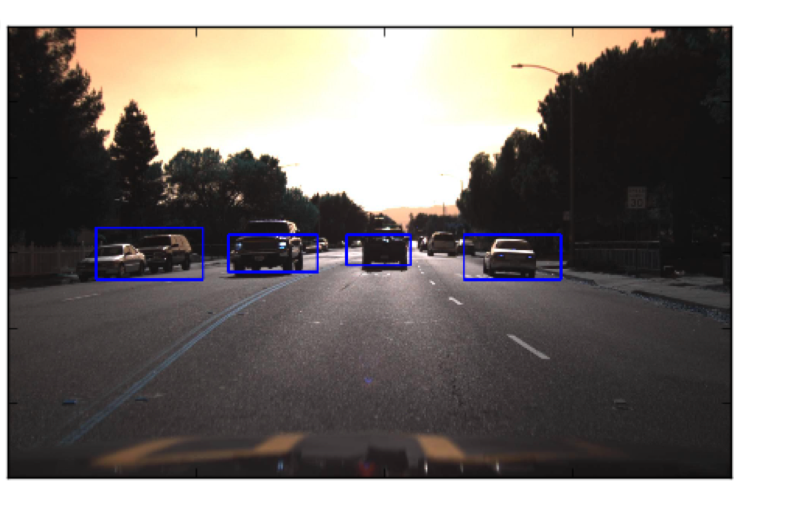
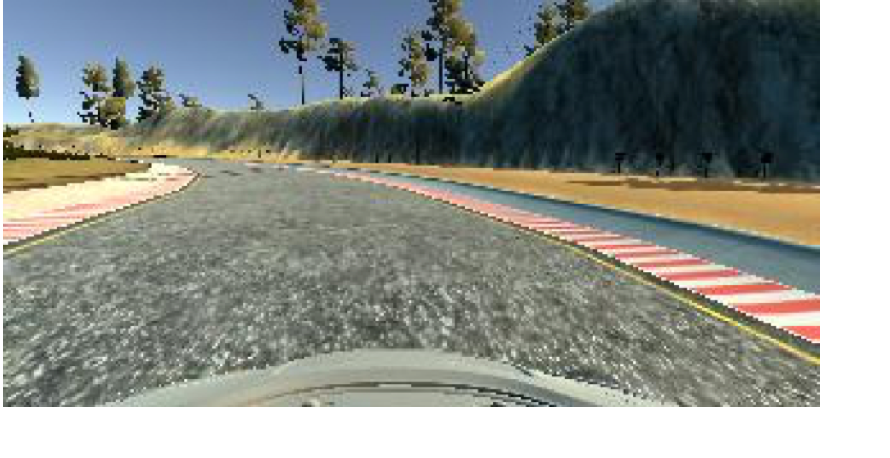
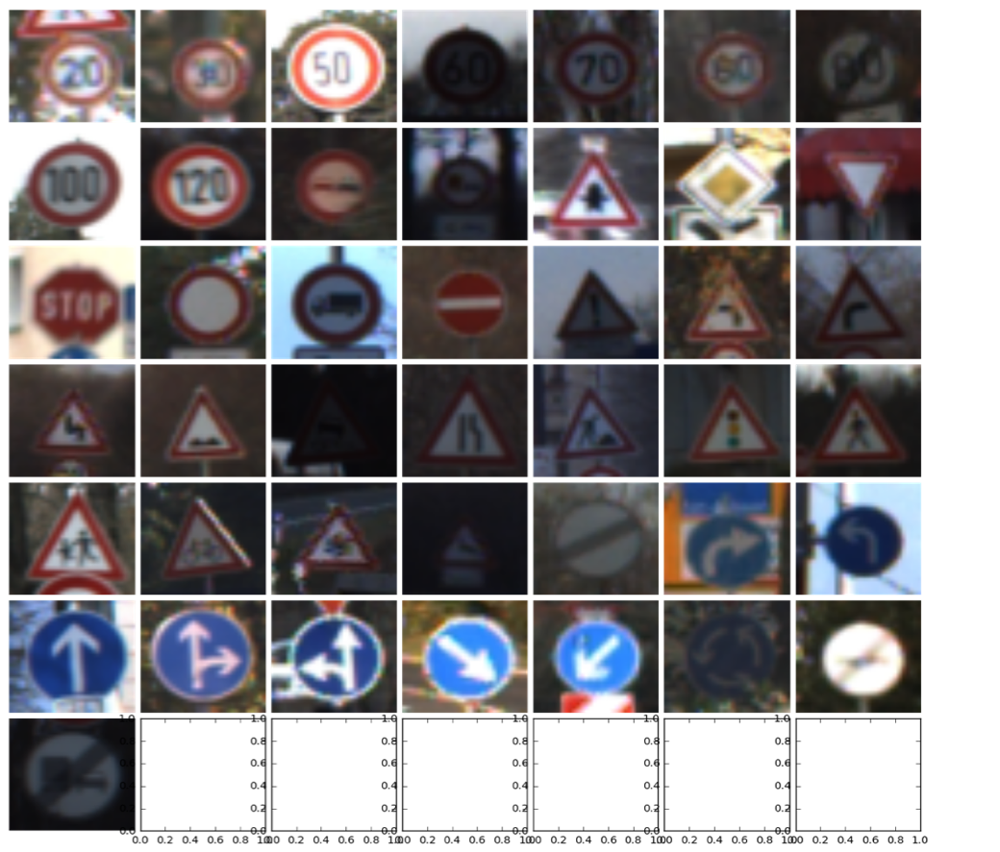

Education
University of Illinois at Urbana-Champaign
The Pennsylvania State University, University Park
Relevant Courses
Machine Learning for Signal Processing, Algorithm, Computer Vision, Distributed System, Parallel Programming, Numerical Analysis, Data Mining
Relevant Projects

Traffic Object Detection - Develop sequential and parallel models to detect cars, trucks, and pedestrians based on driving images using bounding boxes with classification methods such as CNN, support vector machines (SVM), and histogram of oriented gradient (HOG).
Behavior Cloning of Self-Driving Car - Apply transfer learning using Deep Neural Network with GPU to teach a simulated car how to drive based on three front cameras in a simulated environment.
Traffic Sign Classification - Construct classifiers based on convolution neural network (CNN) to predict images of traffic signs (including 43 different classes) with an accuracy of 95%.


Relevant Work Experiences
Publications
Shang, X., Cusick, R.D. and Smith, K.C., 2017. A Combined Modeling and Experimental Study Assessing the Impact of Fluid Pulsation on Charge and Energy Efficiency in Capacitive Deionization. Journal of The Electrochemical Society, 164(14), pp.E536-E547.
X. Shang, K. Smith, R. Cusick, Minimizing energy consumption in constant-current capacitive deionization by modelling local charging, transport and leakage current, in preparation, (2017)
R. Guha, X. Shang, A.L. Zydney, D. Velegol, M. Kumar, Diffusiophoresis contributes significantly to colloidal fouling in low salinity reverse osmosis systems, Journal of Membrane Science, (2015)
X. Shang, H.-C. Kim, J.H. Huang, B.A. Dempsey, Treating laundry waste water using coagulation, sedimentation, and membrane filtration. Separation and purification technology (2015)
H.-C. Kim, X. Shang, J.-H. Huang, B.A. Dempsey, Coagulation strategies to decrease fouling and increase critical flux and contaminant removal in microfiltration of laundry wastewater, Journal of Membrane Science, (2014)
Selected Presentations
Xia Shang, Kyle Smith, Roland Cusick, ACS, Philadelphia, PA, 08/2016
Xia Shang, Kyle Smith, Jeremy Guest, Roland Cusick, DesalTech2015, San Diego, CA, 08/2015
Xia Shang, Roland Cusick, DesalTech2015, San Diego, CA, 08/2015
Xia Shang, Roland Cusick, AEESP, New Haven, CT, 06/2015
Xia Shang, Junhua Jiang, and Roland Cusick, IAP2014, the Netherlands, 05/2014